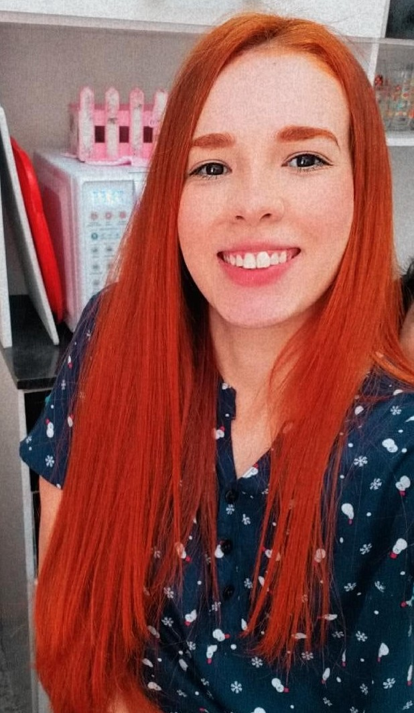

Desenvolvedora
Front-End Júnior
Localizada em São Paulo 🏢
Andressa Correia Benevides

Localizada em São Paulo 🏢
Profissional em transição para a área de Tecnologia, graduada em Análise em Desenvolvimento de Sistemas e atualmente cursando Pós-Graduação em Desenvolvimento Web Full Stack.
Tenho conhecimentos em HTML, CSS e JavaScript e venho ampliando continuamente minha formação por meio de cursos e estudos na área de desenvolvimento.
Busco minha primeira oportunidade profissional em Tecnologia, com interesse em atuar como Desenvolvedora Front-End.
Tenho facilidade em aprender, sou responsável, comunicativa, organizada e motivada a desenvolver novas habilidades, contribuir com a equipe e participar da criação de sites, aplicações web e projetos tecnológicos.
Na empresa Livia Pelissare, eu fazia o primeiro atendimento ao cliente, buscando entender o que o cliente estava a procura, oferecendo os produtos que possuíamos e fazendo consultórias para a satisfação final do cliente.
Na empresa HSBR, desempenhava as funções administrativas da empresa, atendendo telefonemas, alimentando planilhas, enviando e recebendo e-mail e auxiliava nos demais cargos quando era solicitada.
Na empresa TGVC, atuava como vendedora em um quiosque de óculos solares. Realizava as vendas dos produtos, atraia novos clientes e apresentava soluções caso houvesse algum problema na ausência dos responsáveis.
Minha experiência acadêmica:
Ensino Médio Completo que conclui na instituição: E.E Profa Zuleika De Barros Martins Ferreira.
Ensino Superior/ Graduação:
Análise em Desenvolvimento de Sistemas - Concluído 08/2026
Instituição: Descomplica Faculdade Digital.
Ensino Superior/ Pós Graduação: Full Satck Development - Cursando atualmente
Instituição: Faculdade Impacta Digital.